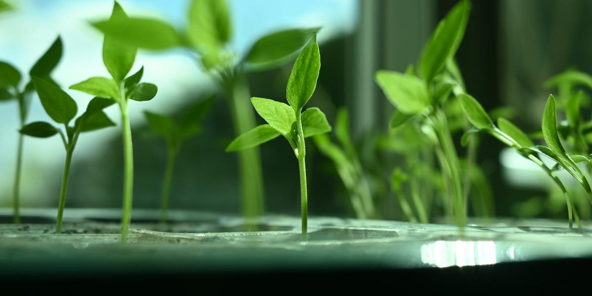

Beginner pH and EC/PPM Explained (Without the Chemistry Class)
This post may contain affiliate links. As an Amazon Associate I earn from qualifying purchases.
The first time you read a hydroponics forum, it can feel like everyone is speaking a different language. pH, EC, PPM, TDS, mS/cm. Here is the good news: you only need to understand two ideas to grow great lettuce and herbs. One is how acidic your water is (pH). The other is how much fertilizer is dissolved in it (EC or PPM). Let's take them one at a time, in plain words.
What pH means for your plants
pH is a scale from 0 to 14 that tells you how acidic or alkaline a liquid is. Seven is neutral. Lower is more acidic, higher is more alkaline. Your plants care because pH controls whether nutrients in the water are actually available to the roots.
The University of Hawaii's Kratky publication explains it clearly: at high pH, nutrients like iron, manganese, copper, and zinc become less available, while at low pH, phosphorus, potassium, calcium, and magnesium become less available. So a plant can be sitting in plenty of fertilizer and still look hungry if the pH is far off.
The pH range to aim for
For the Kratky lettuce systems it describes, the University of Hawaii recommends a pH of roughly 5.5 to 6.5. Other sources vary a little. UF/IFAS lists 6.0 to 7.0 for lettuce in small home systems. The takeaway for beginners: somewhere in the high 5s to low 6s is a comfortable target for most leafy greens, and you do not need to chase an exact decimal.
How to test pH on a budget
You have three options, all mentioned in the University of Hawaii publication:
- Liquid test kits: drops of indicator in a small vial, then compare the color to a chart. The UH publication notes they are precise to about half a pH unit, which it calls good enough for most growers and hobbyists.
- Test strips: similar idea, very cheap, a little harder to read.
- Digital pH pens: fast and precise, but they need regular calibration, and the publication notes pH electrodes tend to wear out sooner than EC meters.
For a first jar or tote, a liquid kit is a great start. You can find the kinds I like on my Gear page.
Adjusting pH
If your pH is too high, a "pH down" product lowers it. If it is too low, "pH up" raises it. Add a few drops at a time, stir, wait a few minutes, and test again. Go slowly. Overshooting and bouncing back and forth is harder on plants than being a little off. Always mix nutrients first, then check and adjust pH, because the nutrients themselves change it.
What EC and PPM mean
EC stands for electrical conductivity. Pure water barely conducts electricity, but water with dissolved fertilizer salts conducts more. So an EC meter is really a way to estimate how strong your nutrient solution is. It is often shown in mS/cm (millisiemens per centimeter).
PPM (parts per million), sometimes labeled TDS, is the same measurement converted into a different number. Here is the catch: different meters use different conversion factors, so the same water can read as different PPM numbers on two different meters. That is why many growers prefer to think in EC. If you use PPM, check which scale your meter uses and stick with one meter.
The EC range to aim for
For lettuce in small home systems, UF/IFAS gives an EC range of about 1.2 to 1.8 mS/cm. University of Hawaii material on Kratky-style systems advises caution above about 2 mS/cm for adult plants, says never to exceed 3, and notes that lower concentrations are recommended for seedlings and during hot weather. That last point matters for Texas growers: in summer, mild is safer.
Do you need an EC meter right away?
Honestly, not for your first mason jar. If you follow the nutrient label carefully and use clean water, you can grow a fine head of lettuce. An EC meter becomes really useful when you:
- Grow in bigger reservoirs you top off over time, like DWC buckets
- Want to know when to change your solution
- Have hard or unusual tap water and want to know your starting point
- Are troubleshooting burnt leaf tips or slow growth
Why Kratky behaves differently
In a Kratky jar, the plant drinks the water down and you do not top it up to the original level. As water disappears, the nutrients left behind can change in concentration, and pH can drift. That is one more reason to start at a moderate strength rather than a strong one. If you check EC in a Kratky jar later in the grow, do not panic if it has moved. Watch the plant first. Healthy green leaves and white roots tell you more than any one number.
Your water matters
Tap water already contains dissolved minerals, and it varies a lot by city. Some Texas water is fairly hard and alkaline. Test your plain tap water once with a pH kit (and an EC meter if you have one) so you know your starting point. If the numbers are high, filtered or distilled water is an option, especially for small jars where it does not cost much.
A simple routine
- Mix nutrients into water following the label.
- Stir well, then test pH.
- Adjust slowly toward roughly 5.5 to 6.5.
- If you have an EC meter, note the reading so you have a baseline.
- Check again weekly (more often in recirculating or aerated systems).
- Write it down. A notebook is the most underrated tool in hydroponics.
Keep learning
When numbers drift and the plant looks unhappy, the cause is often temperature or light rather than chemistry. Read fixing root rot and algae and keeping reservoirs cool next. And my book, The Soil-Free Farming Revolution, includes a one-page cheat sheet for pH and EC by crop.